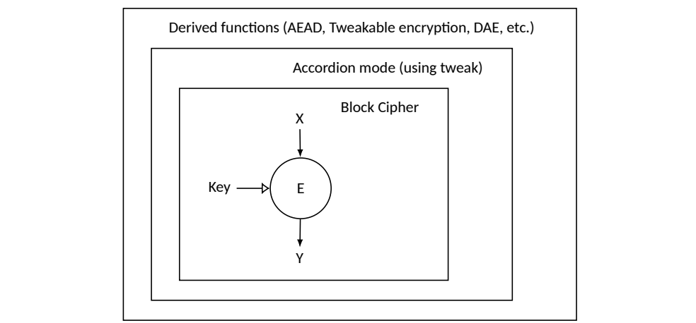

NIST IR 8537 日本語訳
英語タイトル : NIST Workshop on the Requirements for an Accordion Cipher Mode 2024: Workshop Report日本語タイトル : アコーディオン暗号モードの要件に関する NIST ワークショップ 2024：ワークショップ報告書
公開日 : 2024-11-21
原文URL : https://csrc.nist.gov/pubs/ir/8537/final
翻訳編集 : 自動生成（有志による非公式の日本語訳）, 原文取得日 : 2026-10-31, 訳文 : 143 / 143 ブロック
[要約] NIST IR 8537 は、NIST が 2024年6月20日から21日にメリーランド州ロックビルの国立サイバーセキュリティ卓越センターで開催した、アコーディオン暗号モードの要件に関するワークショップの報告書です。ワークショップの目的は、AES の新しいアコーディオンモード（基盤となるブロック暗号のセキュリティへの帰着証明を伴う、tweak 可能な可変入力長の強擬似ランダム置換）の開発について議論することでした。NIST は産業界と政府から要件に関するフィードバックを収集し、ワークショップに先立ち、提案される要件の暫定的なセットを記載した議論用ドラフトを公開しました。本報告書は、このイベントで議論された参加者のフィードバック、主要な要点、今後の方向性をまとめています。
NIST Interagency Report
NIST 省庁間報告書
NIST IR 8537
NIST IR 8537
NIST Workshop on the Requirements for an Accordion Cipher Mode 2024
アコーディオン暗号モードの要件に関する NIST ワークショップ 2024
Workshop Report
ワークショップ報告書
Alyssa Thompson Meltem Sönmez Turan
Alyssa Thompson Meltem Sönmez Turan
This publication is available free of charge from: https://doi.org/10.6028/NIST.IR.8537
本資料は次の場所から無償で入手できます: https://doi.org/10.6028/NIST.IR.8537
NIST Interagency Report
NIST 省庁間報告書
NIST IR 8537
NIST IR 8537
NIST Workshop on the Requirements for an Accordion Cipher Mode 2024
アコーディオン暗号モードの要件に関する NIST ワークショップ 2024
Workshop Report
ワークショップ報告書
Alyssa Thompson
Alyssa Thompson
National Security Agency
国家安全保障局
Guest Researcher, Computer Security Division Information Technology Laboratory
情報技術研究所コンピュータセキュリティ部門 客員研究員
Meltem Sönmez Turan
Meltem Sönmez Turan
Computer Security Division Information Technology Laboratory
コンピュータセキュリティ部門 情報技術研究所
This publication is available free of charge from: https://doi.org/10.6028/NIST.IR.8537
本資料は次の場所から無償で入手できます: https://doi.org/10.6028/NIST.IR.8537
November 2024
2024年11月
U.S. Department of Commerce Gina M. Raimondo, Secretary
米国商務省 Gina M. Raimondo 長官
National Institute of Standards and Technology
米国国立標準技術研究所
Laurie E. Locascio, NIST Director and Under Secretary of Commerce for Standards and Technology
Laurie E. Locascio、NIST 所長兼商務次官（標準・技術担当）
Certain equipment, instruments, software, or materials, commercial or non-commercial, are identified in this paper in order to specify the experimental procedure adequately. Such identification does not imply recommendation or endorsement of any product or service by NIST, nor does it imply that the materials or equipment identified are necessarily the best available for the purpose.
本稿では、実験手順を適切に特定するために、特定の装置、機器、ソフトウェア、材料（商用か非商用かを問わない）に言及している場合があります。こうした特定は、NIST がいかなる製品やサービスも推奨または支持していることを意味せず、特定された材料や装置がその目的にとって必ずしも最良のものであることを意味するものでもありません。
There may be references in this publication to other publications currently under development by NIST in accordance with its assigned statutory responsibilities. The information in this publication, including concepts and methodologies, may be used by federal agencies even before the completion of such companion publications. Thus, until each publication is completed, current requirements, guidelines, and procedures, where they exist, remain operative. For planning and transition purposes, federal agencies may wish to closely follow the development of these new publications by NIST.
本資料では、NIST が割り当てられた法定責務に従って現在策定中の他の資料に言及している場合があります。概念や方法論を含む本資料の情報は、そうした関連資料の完成前であっても、連邦政府機関が利用する場合があります。したがって、各資料が完成するまでは、現行の要件、ガイドライン、手順が存在する場合には、それらが引き続き有効です。計画および移行のため、連邦機関は、NIST によるこれらの新しい刊行物の策定状況を注意深く追うことを検討してもよいです。
Organizations are encouraged to review all draft publications during public comment periods and provide feedback to NIST. Many NIST cybersecurity publications, other than the ones noted above, are available at https://csrc.nist.gov/publications
組織は、パブリックコメント期間中にすべてのドラフト資料を確認し、NIST にフィードバックを提供することが奨励されています。上記以外の NIST のサイバーセキュリティ関連資料の多くは、https://csrc.nist.gov/publications で入手できます。
NIST Technical Series Policies Copyright, Use, and Licensing Statements NIST Technical Series Publication Identifier Syntax
NIST 技術シリーズのポリシー 著作権、使用、ライセンスに関する声明 NIST 技術シリーズ刊行物の識別子の構文
Publication History Approved by the NIST Editorial Review Board on 2024-11-08
刊行履歴 2024-11-08 に NIST 編集審査委員会が承認
How to cite this NIST Technical Series Publication Thompson A, Sönmez Turan M (2024) NIST Workshop on the Requirements for an Accordion Cipher Mode 2024: Workshop Report. (National Institute of Standards and Technology, Gaithersburg, MD), NIST Interagency or Internal Report (IR) NIST IR 8537. https://doi.org/10.6028/NIST.IR.8537
本 NIST 技術シリーズ刊行物の引用方法 Thompson A, Sönmez Turan M (2024) NIST Workshop on the Requirements for an Accordion Cipher Mode 2024: Workshop Report. (National Institute of Standards and Technology, Gaithersburg, MD), NIST Interagency or Internal Report (IR) NIST IR 8537. https://doi.org/10.6028/NIST.IR.8537
Author ORCID iDs Alyssa Thompson: 0009-0009-8137-2589 Meltem Sönmez Turan: 0000-0002-1950-7130
著者の ORCID iD Alyssa Thompson: 0009-0009-8137-2589 Meltem Sönmez Turan: 0000-0002-1950-7130
Contact Information ciphermodes@nist.gov
連絡先 ciphermodes@nist.gov
Additional Information Additional information about this publication is available at https://csrc.nist.gov/pubs/ir/8537/final, including related content, potential updates, and document history.
追加情報 本資料に関する追加情報は https://csrc.nist.gov/pubs/ir/8537/final で入手できます。関連コンテンツ、更新の可能性、文書の履歴も掲載されています。
All comments are subject to release under the Freedom of Information Act (FOIA).
すべてのコメントは、情報自由法（FOIA）に基づく公開の対象となります。
Abstract
要旨
NIST hosted the NIST Workshop on the Requirements for an Accordion Cipher Mode 2024 on June 20–21, 2024, at the National Cybersecurity Center of Excellence in Rockville, Maryland. This report summarizes the participant feedback, key takeaways, and future directions discussed during the event.
NIST は、2024年6月20日から21日にかけて、メリーランド州ロックビルの国立サイバーセキュリティ卓越センターで、アコーディオン暗号モードの要件に関する NIST ワークショップ 2024 を開催しました。本報告書は、このイベントで議論された参加者のフィードバック、主要な要点、今後の方向性をまとめたものです。
Keywords
キーワード
accordion mode; block ciphers; cryptography; performance; standardization.
アコーディオンモード、ブロック暗号、暗号技術、性能、標準化。
Reports on Computer Systems Technology
コンピュータシステム技術に関する報告書
The Information Technology Laboratory (ITL) at the National Institute of Standards and Technology (NIST) promotes the U.S. economy and public welfare by providing technical leadership for the Nation’s measurement and standards infrastructure. ITL develops tests, test methods, reference data, proof of concept implementations, and technical analyses to advance the development and productive use of information technology. ITL’s responsibilities include the development of management, administrative, technical, and physical standards and guidelines for the cost-effective security and privacy of other than national security-related information in federal information systems.
米国国立標準技術研究所（NIST）の情報技術研究所（ITL）は、国の測定・標準インフラに関する技術的リーダーシップを提供することで、米国経済と公共の福祉の増進に貢献しています。ITL は、情報技術の発展と生産的な利用を促進するため、テスト、テスト手法、参照データ、概念実証実装、技術分析を開発しています。ITL の責務には、連邦政府情報システムにおける、国家安全保障に関するもの以外の情報について、費用対効果の高いセキュリティとプライバシーを実現するための、管理・運営・技術・物理面の標準とガイドラインの策定が含まれます。
Table of Contents
目次
Acknowledgments
謝辞
The authors thank Drew Bowerman (NSA), Donghoon Chang, Yu Long Chen, Morris Dworkin, Jim Foti, Sara Kerman, Yu Sasaki, and Isabel Van Wyk for the valuable feedback they provided during the development of this document.
著者らは、本書の作成中に貴重なフィードバックを提供してくださった Drew Bowerman（NSA）、Donghoon Chang、Yu Long Chen、Morris Dworkin、Jim Foti、Sara Kerman、Yu Sasaki、Isabel Van Wyk の各氏に感謝します。
1. Introduction
1. はじめに
On June 20–21, 2024, the National Institute of Standards and Technology (NIST) held an in-person Workshop on the Requirements for an Accordion Cipher Mode [1] at the National Cybersecurity Center of Excellence (NCCoE) in Rockville, Maryland. The event brought together 43 participants representing diverse perspectives from government, industry, and academia.
2024年6月20日から21日にかけて、米国国立標準技術研究所（NIST）は、メリーランド州ロックビルの国立サイバーセキュリティ卓越センター（NCCoE）で、アコーディオン暗号モードの要件に関するワークショップ [1] を対面で開催しました。このイベントには、政府、産業界、学術界のさまざまな立場を代表する 43 人が参加しました。
The purpose of the workshop was to discuss the development of a new accordion mode of the Advanced Encryption Standard (AES) that is a tweakable variable-input-length-strong pseudorandom permutation (VIL-SPRP) with a reduction proof to the security of the underlying block cipher. NIST also collected feedback on requirements from industry and government and initiated a discussion on the development of an accordion mode. Prior to the workshop, NIST published a discussion draft [2] with a preliminary set of proposed requirements for an accordion mode.
ワークショップの目的は、Advanced Encryption Standard（AES）の新しいアコーディオンモードの開発について議論することでした。これは、tweak 可能な可変入力長の強擬似ランダム置換（VIL-SPRP）であり、基盤となるブロック暗号のセキュリティへの帰着証明を伴います。NIST はまた、産業界と政府から要件に関するフィードバックを収集し、アコーディオンモードの開発に関する議論を開始しました。ワークショップに先立ち、NIST は、アコーディオンモードに対して提案される要件の暫定的なセットを記載した議論用ドラフト [2] を公開しました。
Topics of interest included the parameter sizes of the accordion mode, requirements and features for the main use cases, security notions under consideration, performance requirements, and the development and standardization process. Specific topics for which NIST requested feedback included multi-user security, key/context commitment, nonce hiding, and key-dependent input (KDI) security.1 A summary of key takeaways is included in Sec. 3.
関心のあったトピックには、アコーディオンモードのパラメータサイズ、主要なユースケースの要件と機能、検討中のセキュリティ概念、性能要件、開発と標準化のプロセスが含まれます。NIST がフィードバックを求めた具体的なトピックには、マルチユーザーセキュリティ、鍵/コンテキストコミットメント、ナンス秘匿、鍵依存入力（KDI）セキュリティがありました。1 主要な要点の概要は第 3 節に示します。
The workshop consisted of nine sessions scheduled over two days. The first day included introductory material from NIST researchers, presentations and an open discussion about the requirements and features of the accordion mode, and a panel discussion on adoption perspectives. The second day included presentations and open discussions on authenticated encryption designs, accordion design approaches, and potential security properties. The schedule on day two reserved time for lightning talks, but this was dropped since no requests for lightning talks were received. The workshop concluded with a session on the development process and next steps, including a preliminary NIST proposal for the process and open discussion. The full workshop agenda is available in Appendix A, and videos of the talks are available on the workshop website [1].
ワークショップは、2 日間にわたって予定された 9 つのセッションで構成されました。初日には、NIST 研究者による導入的な内容、アコーディオンモードの要件と機能に関する発表と自由討論、採用の観点に関するパネルディスカッションが含まれました。2 日目には、認証付き暗号の設計、アコーディオンの設計アプローチ、想定されるセキュリティ特性に関する発表と自由討論が含まれました。2 日目の予定ではライトニングトークの時間を確保していましたが、ライトニングトークの申し込みがなかったため、これは取りやめました。ワークショップは、プロセスに関する NIST の暫定的な提案と自由討論を含む、開発プロセスと今後の進め方に関するセッションで締めくくられました。ワークショップの議事次第の全体は付録 A に、講演の動画はワークショップのウェブサイト [1] に掲載されています。
1.1. Background
1.1. 背景
Two topics of particular interest were the number of variants of the accordion mode that would be needed and the related projects that would be required as a result. This was largely influenced by the need for higher data limits and for crypto agility. Variants of the accordion mode might emerge from providing options for birthday bound security and beyond-birthday bound (BBB) security or from operating on different underlying primitives. Related projects that could result from these decisions include specifying a new underlying primitive or considering a stopgap solution that could be standardized quickly while in-depth techniques for the accordion are developed.
特に関心を集めた 2 つのトピックは、必要となるアコーディオンモードの派生形の数と、その結果として必要になる関連プロジェクトでした。これは、より高いデータ上限の必要性と暗号アジリティの必要性に大きく影響されました。アコーディオンモードの派生形は、誕生日限界（birthday bound）のセキュリティと誕生日限界を超える（BBB）セキュリティの選択肢を提供すること、または異なる基盤プリミティブで動作させることから生まれる可能性があります。これらの判断から生じ得る関連プロジェクトには、新しい基盤プリミティブの仕様策定や、アコーディオンの詳細な技術を開発している間に迅速に標準化できる暫定的な解決策の検討があります。
While BBB techniques would increase the data limits of the accordion mode, they would result in various trade-offs, including reduced performance and a more complicated security proof. An alternative approach that would also increase the data limits of the accordion mode is to specify a block cipher with a larger block size. An example with a 256-bit block size and a 256-bit key that could be considered is Rijndael-256-256, which was part of the original AES submission to NIST [3]. This approach would also provide an increased measure of crypto-agility, as would a Keccak-based encryption scheme as an underlying primitive. However, both options may result in a delay while the new primitive is standardized and deployed. In this scenario, standardizing a stopgap measure (e.g., AES-GCM-SIV [4]) could provide a mode of operation with improved security as quickly as possible.
BBB の技術はアコーディオンモードのデータ上限を引き上げますが、性能の低下やセキュリティ証明の複雑化など、さまざまなトレードオフが生じます。アコーディオンモードのデータ上限を引き上げるもう 1 つの方法は、より大きなブロックサイズを持つブロック暗号を規定することです。検討し得る例として、256 ビットのブロックサイズと 256 ビットの鍵を持つ Rijndael-256-256 があり、これは NIST への当初の AES の応募案の一部でした [3]。この方法は、基盤プリミティブとして Keccak ベースの暗号化方式を用いる場合と同様に、暗号アジリティも高めます。ただし、どちらの選択肢も、新しいプリミティブが標準化されて展開されるまで遅れが生じる可能性があります。このような場合、暫定的な措置（AES-GCM-SIV [4] など）を標準化することで、セキュリティを改善した動作モードをできるだけ早く提供できる可能性があります。
These decisions depend on one another, and the answers will determine a base direction for the project. NIST collected feedback on these topics throughout the workshop, and the panel discussion explored many of these ideas (see Sec. 2.3).
これらの判断は互いに依存しており、その答えがプロジェクトの基本的な方向を決めることになります。NIST はワークショップを通じてこれらのトピックに関するフィードバックを収集し、パネルディスカッションではこれらの考えの多くが検討されました（2.3 節を参照）。
2. Workshop Topics and Discussion
2. ワークショップのトピックと議論
2.1. Opening Talks
2.1. 開会講演
NIST initiated the workshop with a set of introductory talks. During the opening session, Matthew Scholl, the Chief of the Computer Security Division (CSD) in NIST’s Information Technology Laboratory (ITL), welcomed the workshop participants. The workshop featured three talks by NIST-affiliated speakers:
NIST は、一連の導入講演でワークショップを開始しました。開会セッションでは、NIST の情報技術研究所（ITL）のコンピュータセキュリティ部門（CSD）の部長である Matthew Scholl が、ワークショップの参加者を歓迎しました。ワークショップでは、NIST に所属する講演者による 3 つの講演が行われました。
•In “Overview of the NIST Block Cipher Modes Project,” Meltem Sönmez Turan briefly explained the development of NIST-approved block cipher modes, provided a timeline of the project starting from the 1980s, and gave a status update on reviews of the NIST Special Publication (SP) 800-38 series [5–11].
•「Overview of the NIST Block Cipher Modes Project」において、Meltem Sönmez Turan は、NIST 承認のブロック暗号モードの開発経緯を簡潔に説明し、1980年代に始まるプロジェクトの年表を示すとともに、NIST 特別刊行物（SP）800-38 シリーズ [5–11] の見直しの状況を報告しました。
•In “Introduction to the Accordion Mode and Derived Functions,” Alyssa Thompson explained the parameters of the accordion mode (including the block size, tweak size, granularity, message size, etc.) and provided a formal definition for it. The presentation introduced the derived functions, including authenticated encryption with associated data (AEAD), tweakable encryption, and deterministic authenticated encryption. It also explained the layered structure of the accordion (see Fig. 1).
•「Introduction to the Accordion Mode and Derived Functions」において、Alyssa Thompson は、アコーディオンモードのパラメータ（ブロックサイズ、tweak サイズ、粒度、メッセージサイズなど）を説明し、その形式的な定義を示しました。この発表では、関連データ付き認証付き暗号（AEAD）、tweak 可能な暗号化、決定論的認証付き暗号などの派生関数が紹介されました。また、アコーディオンの階層構造についても説明されました（図 1 を参照）。
•In “Toward a New Block Cipher Mode Standard: Reasoning About Requirements Featuring the NECST Framework,” Nicky Mouha discussed the proposed requirements for an accordion mode that NIST published in [2] and provided a framework called New features, Efficiency, Compatibility, Security and Technical reason (NECST) for evaluating and making decisions on the requirements.
•「Toward a New Block Cipher Mode Standard: Reasoning About Requirements Featuring the NECST Framework」において、Nicky Mouha は、NIST が [2] で公開したアコーディオンモードの提案要件について議論し、要件を評価して判断を下すための、New features, Efficiency, Compatibility, Security and Technical reason（NECST）と呼ばれるフレームワークを示しました。

3重の入れ子の箱の図です。外側の箱には「Derived functions (AEAD, Tweakable encryption, DAE, etc.)」（派生関数：AEAD、調整可能な暗号化、DAE など）、その内側の箱には「Accordion mode (using tweak)」（tweak を使うアコーディオンモード）、さらに内側の箱には「Block Cipher」（ブロック暗号）と書かれています。最も内側の箱には「E」と書かれた円があり、上から入力 X が入り、下へ出力 Y が出て、左から「Key」（鍵）が入ります。
Figure 1. Layered structure of the accordion mode and derived functions
図 1. アコーディオンモードと派生関数の階層構造
2.2. Accordion Mode Features and Requirements
2.2. アコーディオンモードの機能と要件
The workshop included four talks on the features and requirements of the accordion mode:
ワークショップでは、アコーディオンモードの機能と要件に関する 4 つの講演が行われました。
•John Preuß Mattsson presented “Comments on NIST Requirements for an Accordion Cipher Mode,” which was joint work with Ben Smeets and Erik Thormarker. The presentation included support for NIST’s proposal to standardize an accordion mode and derived functions and then responded to the feedback requested by NIST. The feedback emphasized a need for several accordions built on different primitives to support crypto-agility, in addition to an accordion built on Rijndael-256-256. Comments on parameter sizes included a strong preference for a granularity of \(\leq 8\), 256-bit keys, variable-length tweaks of \(\geq 256\) bits, a minimum plaintext size of 16 or 32 bytes, and a maximum plaintext size of \(2^{48}\) or \(2^{64}\) bytes. The preferred security goals included nonce hiding, replay protection, nonce misuse resistance, and robust authenticated encryption (RAE) or release of unverified plaintext (RUP) security. There was also a recommendation to drop the deterministic authenticated encryption derived function and instead use an AEAD as a “hedged” authenticated encryption.
•John Preuß Mattsson は、Ben Smeets および Erik Thormarker との共同研究である「Comments on NIST Requirements for an Accordion Cipher Mode」を発表しました。この発表には、アコーディオンモードと派生関数を標準化するという NIST の提案への支持が含まれ、そのうえで NIST が求めたフィードバックに応答していました。フィードバックでは、Rijndael-256-256 に基づくアコーディオンに加えて、暗号アジリティを支えるために異なるプリミティブに基づく複数のアコーディオンが必要であることが強調されました。パラメータサイズに関するコメントには、\(\leq 8\) の粒度、256 ビットの鍵、\(\geq 256\) ビットの可変長 tweak、最小平文サイズ 16 または 32 バイト、最大平文サイズ \(2^{48}\) または \(2^{64}\) バイトへの強い選好が含まれていました。望ましいセキュリティ目標には、ナンス秘匿、リプレイ防止、ナンス誤用耐性、頑健な認証付き暗号（RAE）または未検証平文の公開（RUP）に対するセキュリティが含まれていました。また、決定論的認証付き暗号の派生関数を廃止し、代わりに AEAD を「ヘッジ型」の認証付き暗号として使用するという推奨もありました。
•Guy B. from the U.K. National Cyber Security Centre (NCSC) gave two talks titled “Security Goals for an Accordion Mode: Release of Unverified Plaintext and Multi-user Security” and “Requirements for an Accordion Mode,” which were joint work with John H. and Charlotte S. Both talks highlighted how the NCSC prioritizes high-security requirements. The first talk stated the need for strong RUP security and beyond-birthday bounds that are practical and secure for multi-user environments. In the second talk, Guy B. emphasized the need for a solution in the near-term while also looking ahead for a long-term solution. Some of NCSC’s highest priorities included simple security analysis, compatibility with AES, misuse-resistant authenticated encryption and RUP security, and BBB data limits.
•英国国家サイバーセキュリティセンター（NCSC）の Guy B. は、John H. および Charlotte S. との共同研究である「Security Goals for an Accordion Mode: Release of Unverified Plaintext and Multi-user Security」と「Requirements for an Accordion Mode」の 2 件の講演を行いました。どちらの講演も、NCSC が高いセキュリティ要件をどのように優先しているかを強調していました。最初の講演では、強力な RUP セキュリティと、マルチユーザー環境で実用的かつ安全な、誕生日限界を超える安全性境界の必要性が述べられました。2 件目の講演では、Guy B. は、近い将来に向けた解決策の必要性を強調しつつ、長期的な解決策も見据える必要があることを述べました。NCSC の最優先事項には、簡潔なセキュリティ分析、AES との互換性、誤用耐性のある認証付き暗号と RUP セキュリティ、BBB のデータ上限などが含まれていました。
•Tushar Patel presented “Accordion Cipher-mode Preferable Features,” which included recommendations to support a 256-bit block cipher, variable-length tweaks that are a multiple of 128 bits, as much parallelism as possible, and key commitment. Some additional implementation features to consider were proposed, including fast drop tags, padding attack prevention, and ciphertext segmentation.
•Tushar Patel は「Accordion Cipher-mode Preferable Features」を発表し、256 ビットのブロック暗号、128 ビットの倍数となる可変長 tweak、可能な限りの並列性、鍵コミットメントに対応することを推奨しました。検討すべき追加の実装機能として、高速なタグ破棄、パディング攻撃の防止、暗号文のセグメント化などが提案されました。
Open discussion. The “Accordion Mode Requirements/Features” topic concluded with a one-hour open discussion. Rijndael-256-256 under a birthday bound accordion mode and AES under a BBB accordion mode were discussed first. While standardizing a 256-bit block cipher was generally supported by workshop participants, most also accepted that this might not be a straightforward transition and could take additional time. The solution of a BBB accordion mode using AES-256 had mixed support. There was some concern that this would lead to a more complex mode, although others maintained that a nonce-based key derivation for AEAD is achievable.
自由討論。「アコーディオンモードの要件/機能」のトピックは、1 時間の自由討論で締めくくられました。誕生日限界のアコーディオンモードの下での Rijndael-256-256 と、BBB のアコーディオンモードの下での AES が最初に議論されました。256 ビットのブロック暗号を標準化することはワークショップの参加者に概ね支持されましたが、ほとんどの参加者は、これが容易な移行とはならず、追加の時間を要する可能性があることも認めました。AES-256 を用いた BBB アコーディオンモードという解決策への支持は分かれました。これによってモードがより複雑になるという懸念がある一方で、AEAD のためのナンスベースの鍵導出は実現可能であると主張する参加者もいました。
The next topic discussed was granularity (denoted as \(g\)), or coarseness of the allowed plaintext sizes [2]. The discussion centered on the value of supporting \(g < 8\), including which use cases require it and how complicated it would be to support. Although several participants and speakers proposed a granularity of \(g = 1\) or \(g = 8\), there was agreement during the open discussion that \(g = 1\) would be more difficult to support, and no one provided a concrete requirement for it. However, Chris Celi from the Security Testing, Validation and Measurement Group at NIST pointed out that while it is more complicated, bit-level testing is used by some and is typically available for hashes and some AES testing. It was unclear why bit-level testing was supported in the past and whether those using it today have a requirement for it.
次に議論されたトピックは、粒度（\(g\) と表記）、すなわち許容される平文サイズの粗さでした [2]。議論は、\(g < 8\) に対応する価値、それを必要とするユースケース、対応することの複雑さを中心に進みました。複数の参加者と講演者が \(g = 1\) または \(g = 8\) の粒度を提案しましたが、自由討論の中で、\(g = 1\) は対応がより難しくなるという合意があり、これに関する具体的な要件を示した者はいませんでした。ただし、NIST のセキュリティテスト・検証・測定グループの Chris Celi は、より複雑ではあるものの、ビットレベルのテストは一部で使われており、通常はハッシュや一部の AES テストで利用可能であると指摘しました。過去にビットレベルのテストが対応されていた理由と、現在それを使用している者がそれを要件としているかどうかは不明でした。
The open discussion concluded with some brief comments on the minimum plaintext size and variable-length tweaks. It was noted that the AEAD derived function will need variable-length tweaks. The group also generally agreed that a minimum plaintext size smaller than the block size adds complexity and, if needed, a padding scheme could be specified in an additional derived function.
自由討論は、最小平文サイズと可変長 tweak に関する簡潔なコメントで締めくくられました。AEAD の派生関数には可変長 tweak が必要になることが指摘されました。また、ブロックサイズより小さい最小平文サイズは複雑さを増し、必要であれば追加の派生関数でパディング方式を規定できるという点でも、グループは概ね一致しました。
2.3. Panel Discussion on Adoption Perspectives
2.3. 採用の観点に関するパネルディスカッション
Andrew Regenscheid, Group Leader of the Cryptographic Technology Group at NIST, moderated a panel called “Adoption Perspectives.” The panelists were Shai Halevi (AWS), Paul Crowley (Google), Matthew Simpson (NSA), and Krystian Matusiewicz (Intel). The discussion was related to the requirements and features topic and also included approaches to increasing the usage bounds.
NIST の暗号技術グループのグループリーダーである Andrew Regenscheid が、「Adoption Perspectives」と題したパネルの司会を務めました。パネリストは、Shai Halevi（AWS）、Paul Crowley（Google）、Matthew Simpson（NSA）、Krystian Matusiewicz（Intel）でした。議論は、要件と機能のトピックに関連しており、使用上限を引き上げる方法も含んでいました。
Shai Halevi asserted that it is urgent to get a wider block cipher for “the mountains of data that need to be moved” and that a BBB accordion mode would be too slow for practical use and not worth the extra effort. The development of a wider block cipher should consider the trade-offs between new techniques and Rijndael-256-256. Shai Halevi prioritized key commitment and performance of the accordion mode, expected that a small number of accordion modes will be needed, and preferred availability as soon as possible, suggesting that around four years might be realistic.
Shai Halevi は、「移動する必要のある膨大なデータ」のために、より幅の広いブロック暗号を得ることが急務であり、BBB のアコーディオンモードは実用には遅すぎて、追加の労力に見合わないと主張しました。より幅の広いブロック暗号の開発では、新しい技術と Rijndael-256-256 とのトレードオフを考慮すべきです。Shai Halevi は、鍵コミットメントとアコーディオンモードの性能を優先し、必要となるアコーディオンモードの数は少ないと予想し、できるだけ早い提供を望んでおり、約 4 年が現実的かもしれないと示唆しました。
Paul Crowley emphasized that Google is moving petabytes of data with a single key, and a quick solution to increased usage bounds should be prioritized. Rijndael-256-256 without modification would be the quickest way to achieve this. Having three primitives for the accordion mode to operate on — AES-256, Rijndael-256-256, and TurboSHAKE — may be worthwhile. Paul Crowley also prioritized nonce misuse resistance and suggested a small granularity \((g = 1)\) but is not convinced that key commitment or KDI security are needed. There are several applications, including storage encryption on Android, that will be unable to use an accordion because they require a streaming mode.
Paul Crowley は、Google が単一の鍵でペタバイト規模のデータを移動していることを強調し、使用上限を引き上げる迅速な解決策を優先すべきだと述べました。そのための最も迅速な方法は、Rijndael-256-256 を変更せずに使用することです。アコーディオンモードが動作する基盤プリミティブとして、AES-256、Rijndael-256-256、TurboSHAKE の 3 つを用意することには価値があるかもしれません。Paul Crowley はまた、ナンス誤用耐性を優先し、小さな粒度 \((g = 1)\) を提案しましたが、鍵コミットメントや KDI セキュリティが必要かどうかについては確信していません。Android でのストレージ暗号化を含め、ストリーミングモードを必要とするため、アコーディオンを使用できないアプリケーションがいくつかあります。
Matthew Simpson stated that the highest priority for national security systems is an authenticated encryption with nonce misuse resistance that operates over AES, preferably available in the near term. In addition, the derived functions are essential to using the accordion mode and will be needed at the same time as the accordion. Some additional features that would be nice to have are larger maximum plaintext sizes, RUP security, multi-user security and BBB security. Matthew Simpson also pointed out that performance goals should be practical and that a small granularity would cover the most use cases. In addition, having too many variants of the accordion may create interoperability issues. A wider block cipher could slow down deployment, but having this as a second option or version seems reasonable.
Matthew Simpson は、国家安全保障システムにとって最優先事項は、AES 上で動作するナンス誤用耐性を持つ認証付き暗号であり、できれば近い将来に提供されるべきだと述べました。さらに、派生関数はアコーディオンモードを使用するうえで不可欠であり、アコーディオンと同時に必要になります。あると望ましい追加の機能には、より大きな最大平文サイズ、RUP セキュリティ、マルチユーザーセキュリティ、BBB セキュリティがあります。Matthew Simpson はまた、性能目標は実用的であるべきであり、小さな粒度でほとんどのユースケースを網羅できると指摘しました。加えて、アコーディオンの派生形が多すぎると、相互運用性の問題が生じる可能性があります。より幅の広いブロック暗号は展開を遅らせる可能性がありますが、これを第 2 の選択肢またはバージョンとして用意することは妥当と思われます。
Krystian Matusiewicz spoke on the importance of robustness and graceful degradation, and on the difficulty of balancing performance versus high-assurance security. There is significant value in producing a standard soon, but there are also benefits in taking the time to produce a new wide block cipher. Krystian Matusiewicz also suggested a granularity equal to the block size to optimize performance and a small number of accordion variants tailored to different use cases.
Krystian Matusiewicz は、堅牢性と段階的な縮退の重要性と、性能と高保証のセキュリティとのバランスをとることの難しさについて話しました。早期に標準を作成することには大きな価値がありますが、時間をかけて新しい幅の広いブロック暗号を作成することにも利点があります。Krystian Matusiewicz はまた、性能を最適化するためにブロックサイズに等しい粒度とすること、および異なるユースケースに合わせた少数のアコーディオンの派生形を用意することを提案しました。
2.4. Authenticated Encryption
2.4. 認証付き暗号
The session on “Authenticated Encryption” included two talks with proposals for achieving authenticated encryption over Galois/Counter Mode (GCM). The proposals related to some stopgap measures that could be considered while the accordion mode is developed and standardized.
「Authenticated Encryption」のセッションでは、Galois/Counter Mode（GCM）上で認証付き暗号を実現するための提案を含む 2 件の講演が行われました。これらの提案は、アコーディオンモードが開発・標準化される間に検討し得る、いくつかの暫定的な措置に関連していました。
•Scott Arcizewski presented “Galois Extended Mode,” which modifies GCM to support increased usage bounds, longer messages, key commitment, and short tags.
•Scott Arcizewski は「Galois Extended Mode」を発表しました。これは、使用上限の引き上げ、より長いメッセージ、鍵コミットメント、短いタグに対応するよう GCM を修正するものです。
•Shay Gueron presented “Double-Nonce-Derive-Key-GCM (DNDK-GCM) General Design Paradigms and Application,” which uses a nonce-based key derivation wrapped around GCM to achieve increased usage bounds, good performance, and optional key commitment. This method is designed to use the existing GCM standard.
•Shay Gueron は「Double-Nonce-Derive-Key-GCM (DNDK-GCM) General Design Paradigms and Application」を発表しました。これは、GCM をラップするナンスベースの鍵導出を使用して、使用上限の引き上げ、良好な性能、任意の鍵コミットメントを実現するものです。この方法は、既存の GCM 標準を使用するように設計されています。
2.5. Design Approaches
2.5. 設計アプローチ
The session on “Design Approaches” included three talks. followed by 20 minutes of open discussion.
「Design Approaches」のセッションでは 3 件の講演が行われ、その後に 20 分間の自由討論が続きました。
•Christoph Dobraunig presented “Efficient Instances of Docked Double Decker with AES, and Application to Authenticated Encryption,” which was joint work with Krystian Matusiewicz, Bart Mennink, and Alexander Tereschenko. This work included three variants of a docked-double-decker accordion mode over AES, each with different features (i.e., birthday bound, BBB, and variable-length tweaks).
•Christoph Dobraunig は、Krystian Matusiewicz、Bart Mennink、Alexander Tereschenko との共同研究である「Efficient Instances of Docked Double Decker with AES, and Application to Authenticated Encryption」を発表しました。この研究には、AES 上の docked-double-decker アコーディオンモードの 3 つの派生形が含まれ、それぞれ異なる機能（誕生日限界、BBB、可変長 tweak）を持っています。
•Jean Paul Degabriele presented “Universal Hash Designs for an Accordion Mode,” which was a joint work with Jan Gilcher, Jérôme Govinden, and Kenneth G. Paterson. This presentation reasoned that a good universal hash function is essential in the design of an accordion mode, particularly when using a hash-encrypt-hash approach, and included five new candidates for universal hash functions that offer good performance and higher security compared to Poly1305.
•Jean Paul Degabriele は、Jan Gilcher、Jérôme Govinden、Kenneth G. Paterson との共同研究である「Universal Hash Designs for an Accordion Mode」を発表しました。この発表は、特にハッシュ・暗号化・ハッシュのアプローチを用いる場合に、優れたユニバーサルハッシュ関数がアコーディオンモードの設計に不可欠であると論じ、Poly1305 と比べて良好な性能と高いセキュリティを提供する、ユニバーサルハッシュ関数の 5 つの新しい候補を含んでいました。
•Pablo Garcia Fernandez presented “Accordion mode based on Hash-Encrypt-Hash,” which was a joint work with Hieu Nguyen Duy, Aleksei Udovenko, and Alex Biryukov. In this proposal, three keys are derived and then used in an HCTR-like construction to achieve variable-length tweaks, multi-key security, context commitment, and larger maximum plaintext size.
•Pablo Garcia Fernandez は、Hieu Nguyen Duy、Aleksei Udovenko、Alex Biryukov との共同研究である「Accordion mode based on Hash-Encrypt-Hash」を発表しました。この提案では、3 つの鍵を導出し、HCTR に類似した構成でそれらを用いて、可変長 tweak、マルチ鍵セキュリティ、コンテキストコミットメント、より大きな最大平文サイズを実現します。
Open Discussion. During the short open discussion, workshop participants expressed support for a hash-encrypt-hash approach over an encrypt-mix-encrypt approach, although KDI security may be infeasible using this technique. Support for a wider block cipher was reiterated, and it was noted that a BBB accordion mode over a tweakable block cipher would be simpler to design than one over AES.
自由討論。短時間の自由討論の中で、ワークショップの参加者は、暗号化・混合・暗号化のアプローチよりもハッシュ・暗号化・ハッシュのアプローチへの支持を表明しましたが、この手法では KDI セキュリティが実現できない可能性があります。より幅の広いブロック暗号への支持が改めて示され、tweak 可能なブロック暗号上の BBB アコーディオンモードは、AES 上のものよりも設計が簡単であることが指摘されました。
2.6. Potential Security Properties
2.6. 想定されるセキュリティ特性
The session on “Potential Security Properties” included three presentations followed by 20 minutes of open discussion.
「Potential Security Properties」のセッションでは 3 件の発表が行われ、その後に 20 分間の自由討論が続きました。
•Yusuke Naito presented “Committing Wide Encryption Mode with Minimum Ciphertext Expansion,” which was a joint work with Yu Sasaki and Takeshi Sugawara. This presentation introduced a technique to achieve authenticated encryption on a wide encryption cipher by using a Feistel structure with a keyed hash function. The resulting properties are context commitment, RAE security, and minimal ciphertext expansion.
•Yusuke Naito は、Yu Sasaki および Takeshi Sugawara との共同研究である「Committing Wide Encryption Mode with Minimum Ciphertext Expansion」を発表しました。この発表では、鍵付きハッシュ関数を用いた Feistel 構造により、幅の広い暗号上で認証付き暗号を実現する手法が紹介されました。その結果得られる特性は、コンテキストコミットメント、RAE セキュリティ、最小限の暗号文拡張です。
•Byeonghak Lee presented “A BBB Secure Accordion Mode from HCTR,” which proposed a modified HCTR that uses a hash and underlying encryption function with a \(2n\)-bit state size to achieve BBB security.
•Byeonghak Lee は「A BBB Secure Accordion Mode from HCTR」を発表しました。これは、BBB セキュリティを実現するために、\(2n\) ビットの状態サイズを持つハッシュと基盤の暗号化関数を使用する、修正版の HCTR を提案するものです。
•Yu Long Chen presented “Information-theoretic Security with Asymmetries,” which was a joint work with Tim Beyne. This work introduced power bounds as an alternative security measurement to the traditional advantage bound and included methods to convert single-user power bounds to multi-user power bounds.
•Yu Long Chen は、Tim Beyne との共同研究である「Information-theoretic Security with Asymmetries」を発表しました。この研究では、従来のアドバンテージ限界に代わるセキュリティの尺度としてパワー限界が導入され、単一ユーザーのパワー限界をマルチユーザーのパワー限界に変換する方法が含まれていました。
Open Discussion. The session concluded with a short open discussion that focused on key commitment. It was noted that application- and protocol-level designers often assume that an algorithm has security properties that are not there or have not been considered, and this is how the idea of key commitment came about. Some suggested making a list of properties of an algorithm for protocol designers. Others suggested that protocol designers should provide a list of the properties that they require (or assume). However, it was also recognized that neither approach truly bridges the communication gap between cryptographic and protocol-level designers.
自由討論。このセッションは、鍵コミットメントに焦点を当てた短時間の自由討論で締めくくられました。アプリケーションレベルやプロトコルレベルの設計者は、アルゴリズムが実際には備えていない、あるいは考慮されていないセキュリティ特性を備えていると想定することが多く、そこから鍵コミットメントの考え方が生まれたことが指摘されました。プロトコル設計者向けにアルゴリズムの特性の一覧を作成することを提案する意見がありました。一方、プロトコル設計者が必要とする（または想定する）特性の一覧を提示すべきだとする意見もありました。ただし、どちらの方法も暗号の設計者とプロトコルレベルの設計者の間のコミュニケーションの隔たりを本当には埋めないことも認識されました。
2.7. Next Steps
2.7. 今後の進め方
The last session of the workshop, “Next Steps,” focused on creating a high-level plan for the project and the process to standardization.
ワークショップの最後のセッションである「Next Steps」は、プロジェクトの高レベルな計画と標準化に向けたプロセスの作成に焦点を当てました。
Morris Dworkin presented “Preliminary NIST Proposal for a Development Process,” which highlighted three potential paths to standardization: a competition, a NIST design, or a NIST-led collaboration. Morris indicated a preference for the last option, which would begin with a request for information on design approaches. After collecting public input, NIST would propose a few design options around mid-2025. Time for public comments and a workshop would follow, after which NIST would finalize the design.
Morris Dworkin は「Preliminary NIST Proposal for a Development Process」を発表し、標準化に向けた 3 つの考えられる道筋、すなわちコンペティション、NIST による設計、NIST 主導の協働を示しました。Morris は最後の選択肢を支持しており、それは設計アプローチに関する情報提供依頼から始まります。パブリックコメントを集めた後、NIST は 2025年半ば頃にいくつかの設計案を提案する予定です。その後、パブリックコメントの期間とワークショップが続き、そのあとで NIST が設計を確定します。
In general, this option was well-received by the workshop participants. A few comments were voiced to reiterate that the derived functions should be developed concurrently. It was pointed out that it is difficult to verify the correctness of security proofs and there is little incentive to do the verification. A suggestion was made to form a committee of experts to analyze the security proof and write a report. A request was also made for the NIST modes team to interact more with the public community.
一般に、この選択肢はワークショップの参加者に好意的に受け止められました。派生関数を並行して開発すべきであることを改めて述べるコメントがいくつかありました。セキュリティ証明の正しさを検証することは困難であり、その検証を行う動機がほとんどないことも指摘されました。専門家の委員会を設置して、セキュリティ証明を分析し報告書を作成することが提案されました。また、NIST のモードチームが一般のコミュニティともっと交流するよう求める要望もありました。
After the presentation, Meltem Sönmez Turan opened a discussion period and presented some possible paths for the project. These paths included an accordion over AES, an accordion over a new block cipher (e.g., Rijndael-256-256), a Keccak-based AEAD, and a stopgap measure (e.g., AES-GCM-SIV). Following this, the workshop participants offered some suggestions for how NIST might interact with the community more, including informal discussions on the mailing list and virtual meetings. The question of how many accordion variants will be needed was also discussed, and opinions on this were mixed. One participant pointed out that a Rijndael-256-256-based accordion and a BBB accordion over AES are competing options. Another pointed out that an AES-based mode is needed, so both of these options should be pursued. Finally, there was a comment that applications that would use AES-GCM-SIV have some overlap with those of the accordion and it could be considered as an alternative to a BBB accordion. There was also a question raised on whether the existing modes in the SP 800-38 series would be extended to support a 256-bit block cipher, should it be standardized. Overall, the comments in the open discussion were supportive of the accordion mode project and the collaborative process that NIST proposed.
講演の後、Meltem Sönmez Turan は討論の時間を設け、プロジェクトの考えられる進め方をいくつか示しました。それらには、AES 上のアコーディオン、新しいブロック暗号（Rijndael-256-256 など）上のアコーディオン、Keccak ベースの AEAD、暫定的な措置（AES-GCM-SIV など）が含まれていました。これに続いて、ワークショップの参加者は、メーリングリストでの非公式な議論やバーチャル会議など、NIST がコミュニティとより多く交流する方法についていくつか提案を行いました。必要となるアコーディオンの派生形の数という問題も議論され、これについては意見が分かれました。ある参加者は、Rijndael-256-256 ベースのアコーディオンと AES 上の BBB アコーディオンは競合する選択肢であると指摘しました。別の参加者は、AES ベースのモードが必要であるため、これらの選択肢はどちらも追求すべきだと指摘しました。最後に、AES-GCM-SIV を使用するアプリケーションにはアコーディオンを使用するアプリケーションと重なる部分があり、BBB アコーディオンの代替案として検討できるというコメントがありました。また、256 ビットのブロック暗号が標準化された場合に、SP 800-38 シリーズの既存のモードがそれに対応するよう拡張されるのかという質問も出されました。全体として、自由討論でのコメントは、アコーディオンモードのプロジェクトと、NIST が提案した協働プロセスに好意的でした。
3. Summary of Feedback on Key Topics
3. 主要トピックに関するフィードバックの概要
The following is a summary of the key points discussed during the workshop presentations, open discussions, and panel discussion. They represent a summary of feedback and an aggregation of recurrent comments received throughout the workshop rather than formal statements or individual positions of workshop participants. Furthermore, these are not statements of NIST’s intentions but are in the form of requests or recommendations made to NIST.
以下は、ワークショップの発表、自由討論、パネルディスカッションで議論された主要な論点の要約です。これらは、ワークショップを通じて寄せられたフィードバックの要約と繰り返し出たコメントの集約であり、ワークショップ参加者の公式な見解や個人の立場ではありません。さらに、これらは NIST の意図を述べたものではなく、NIST に対する要望または推奨の形をとっています。
Takeaway 1. Development Process: A NIST-led collaborative development process is appropriate for the accordion mode, with the derived functions developed concurrently. NIST should interact frequently with the community and form a committee of experts to verify the security proof.
要点 1。 開発プロセス: 派生関数を並行して開発する、NIST 主導の協働による開発プロセスが、アコーディオンモードには適切です。NIST はコミュニティと頻繁に交流し、セキュリティ証明を検証するための専門家の委員会を設置すべきです。
Takeaway 2. Parameters: Of the accordion parameters discussed, there was significant support for variable-length tweaks, a large maximum plaintext size, and a granularity of \(g = 8\). A value of \(g < 8\) should also be considered, but there are trade-offs.
要点 2。 パラメータ: 議論されたアコーディオンのパラメータのうち、可変長 tweak、大きな最大平文サイズ、\(g = 8\) の粒度には大きな支持がありました。\(g < 8\) の値も検討すべきですが、トレードオフがあります。
Takeaway 3. Security Features: In NIST’s example AEAD derived function, nonce misuse resistance and RUP security are automatically achieved. These are important security properties that should be explicitly listed in the requirements.
要点 3。 セキュリティ機能: NIST の AEAD 派生関数の例では、ナンス誤用耐性と RUP セキュリティが自動的に達成されます。これらは重要なセキュリティ特性であり、要件に明示的に列挙すべきです。
Takeaway 4. Additional Features: KDI security is considered unnecessary and may even be infeasible. Key and context commitment are not needed by all, although there is some support for key commitment, possibly as an optional feature. The limited discussion of nonce hiding may indicate low interest, but the comments received were in favor.
要点 4。 追加機能: KDI セキュリティは不要であり、実現不可能でさえある可能性があるとされています。鍵コミットメントとコンテキストコミットメントは、すべての人に必要なわけではありませんが、鍵コミットメントについては、オプション機能とする可能性も含め、一定の支持があります。ナンス秘匿に関する議論は限られており、関心が低い可能性がありますが、寄せられたコメントは賛成でした。
Takeaway 5. Performance: Performance and parallelization should be prioritized without sacrificing security. Concrete performance requirements were not received, and regardless of priorities, the accordion may be impractical in some cases.
要点 5。 性能: 性能と並列化は、セキュリティを犠牲にすることなく優先すべきです。具体的な性能要件は寄せられておらず、優先順位にかかわらず、アコーディオンが実用的でない場合もあります。
Takeaway 6. Larger Block Size: The accordion should support AES-256 and a 256-bit block cipher. Rijndael-256-256 without modification is a promising candidate for the larger block cipher, but trade-offs to pursuing a modified Rijndael-256-256 or an all-new cipher should be considered.
要点 6。 より大きなブロックサイズ: アコーディオンは、AES-256 と 256 ビットのブロック暗号に対応すべきです。変更を加えない Rijndael-256-256 は、より大きなブロック暗号の有望な候補ですが、修正した Rijndael-256-256 や全く新しい暗号を追求することのトレードオフを検討すべきです。
Takeaway 7. Stopgap Solution: A BBB solution over AES is a priority for some and will be needed in the short term. There is no clear direction on whether a BBB accordion, a stopgap measure (e.g., AES-GCM-SIV), or both are preferred.
要点 7。 暫定的な解決策: AES 上の BBB の解決策は、一部の人にとって優先事項であり、短期的に必要になります。BBB アコーディオン、暫定的な措置（AES-GCM-SIV など）、またはその両方のうち、どれが望ましいかについて、明確な方向性はありません。
Takeaway 8. Crypto-Agility: A small number of accordions that operate over different underlying primitives should be supported for crypto-agility. In addition to AES-256 and a 256-bit block cipher, a Keccak-based primitive could be considered.
要点 8。 暗号アジリティ: 暗号アジリティのために、異なる基盤プリミティブ上で動作する少数のアコーディオンに対応すべきです。AES-256 と 256 ビットのブロック暗号に加えて、Keccak ベースのプリミティブも検討できます。
References
参考文献
[1] NIST Workshop on the Requirements for an Accordion Cipher Mode 2024 (2024). Available at https://csrc.nist.gov/Events/2024/accordion-cipher-mode-workshop-2024.
[1] NIST Workshop on the Requirements for an Accordion Cipher Mode 2024 (2024). 入手先: https://csrc.nist.gov/Events/2024/accordion-cipher-mode-workshop-2024.
[2] Chen YL, Davidson M, Dworkin M, Kang J, Kelsey J, Sasaki Y, Sönmez Turan M, Chang D, Mouha N, Thompson A (2024) Proposal of Requirements for an Accordion Mode, National Institute of Standards and Technology, Workshop Discussion Draft. Available at https://csrc.nist.gov/files/pubs/other/2024/04/10/proposal-of-requirements-for-an-accordion-mode-dis/iprd/docs/proposal-of-requirements-for-an-accordion-mode-discussion-draft.pdf.
[2] Chen YL, Davidson M, Dworkin M, Kang J, Kelsey J, Sasaki Y, Sönmez Turan M, Chang D, Mouha N, Thompson A (2024) Proposal of Requirements for an Accordion Mode, National Institute of Standards and Technology, Workshop Discussion Draft. 入手先: https://csrc.nist.gov/files/pubs/other/2024/04/10/proposal-of-requirements-for-an-accordion-mode-dis/iprd/docs/proposal-of-requirements-for-an-accordion-mode-discussion-draft.pdf.
[3] Daemen J, Rijmen V (1999) AES Proposal: Rijndael, AES Algorithm Submission. Available at https://csrc.nist.gov/CSRC/media/Projects/Cryptographic-Standards-and-Guidelines/documents/aes-development/Rijndael-ammended.pdf.
[3] Daemen J, Rijmen V (1999) AES Proposal: Rijndael, AES Algorithm Submission. 入手先: https://csrc.nist.gov/CSRC/media/Projects/Cryptographic-Standards-and-Guidelines/documents/aes-development/Rijndael-ammended.pdf.
[4] Gueron S, Langley A, Lindell Y (2019) AES-GCM-SIV: Nonce Misuse-Resistant Authenticated Encryption, RFC 8452. DOI:10.17487/RFC8452. Available at https://www.rfc-editor.org/info/rfc8452
[4] Gueron S, Langley A, Lindell Y (2019) AES-GCM-SIV: Nonce Misuse-Resistant Authenticated Encryption, RFC 8452. DOI:10.17487/RFC8452. 入手先: https://www.rfc-editor.org/info/rfc8452
[5] Dworkin M (2001) Recommendation for Block Cipher Modes of Operation: Methods and Techniques, NIST SP 800-38A. https://doi.org/10.6028/NIST.SP.800-38A.
[5] Dworkin M (2001) Recommendation for Block Cipher Modes of Operation: Methods and Techniques, NIST SP 800-38A. https://doi.org/10.6028/NIST.SP.800-38A.
[6] Dworkin M (2005) Recommendation for Block Cipher Modes of Operation: The CMAC Mode for Authentication, NIST SP 800-38B. https://doi.org/10.6028/NIST.SP.800-38B.
[6] Dworkin M (2005) Recommendation for Block Cipher Modes of Operation: The CMAC Mode for Authentication, NIST SP 800-38B. https://doi.org/10.6028/NIST.SP.800-38B.
[7] Dworkin M (2004) Recommendation for Block Cipher Modes of Operation: The CCM Mode for Authentication and Confidentiality, NIST SP 800-38C. https://doi.org/10.6028/NIST.SP.800-38C.
[7] Dworkin M (2004) Recommendation for Block Cipher Modes of Operation: The CCM Mode for Authentication and Confidentiality, NIST SP 800-38C. https://doi.org/10.6028/NIST.SP.800-38C.
[8] Dworkin M (2007) Recommendation for Block Cipher Modes of Operation: Galois/Counter Mode (GCM) and GMAC, NIST SP 800-38D. https://doi.org/10.6028/NIST.SP.800-38D.
[8] Dworkin M (2007) Recommendation for Block Cipher Modes of Operation: Galois/Counter Mode (GCM) and GMAC, NIST SP 800-38D. https://doi.org/10.6028/NIST.SP.800-38D.
[9] Dworkin M (2010) Recommendation for Block Cipher Modes of Operation: The XTS-AES Mode for Confidentiality on Storage Devices, NIST SP 800-38E. https://doi.org/10.6028/NIST.SP.800-38E.
[9] Dworkin M (2010) Recommendation for Block Cipher Modes of Operation: The XTS-AES Mode for Confidentiality on Storage Devices, NIST SP 800-38E. https://doi.org/10.6028/NIST.SP.800-38E.
[10] Dworkin M (2012) Recommendation for Block Cipher Modes of Operation: Methods for Key Wrapping, NIST SP 800-38F. https://doi.org/10.6028/NIST.SP.800-38F.
[10] Dworkin M (2012) Recommendation for Block Cipher Modes of Operation: Methods for Key Wrapping, NIST SP 800-38F. https://doi.org/10.6028/NIST.SP.800-38F.
[11] Dworkin M (2016) Recommendation for Block Cipher Modes of Operation: Methods for Format-Preserving Encryption, NIST SP 800-38G. https://doi.org/10.6028/NIST.SP.800-38G.
[11] Dworkin M (2016) Recommendation for Block Cipher Modes of Operation: Methods for Format-Preserving Encryption, NIST SP 800-38G. https://doi.org/10.6028/NIST.SP.800-38G.
Appendix A. Agenda
付録 A. 議事次第
| Thursday, June 20, 2024 | |
|---|---|
| 8:15 | Shuttle Departs Courtyard Gaithersburg Washingtonian Center |
| 8:30 – 9:00 | Arrival/ |
| Session I – Opening Session Chair: Morris Dworkin | |
| 9:00 – 9:10 | Welcome Matthew Scholl |
| 9:10 – 9:35 | Overview of the NIST Block Cipher Modes Project Meltem Sönmez Turan |
| 9:35 – 10:00 | Introduction to the Accordion Mode and Derived Functions Alyssa Thompson |
| 10:00 – 10:30 | Break |
| Session II – Accordion Mode Requirements/Features (I) Session Chair: Yu Long Chen | |
| 10:30 – 11:20 | Preliminary NIST Proposals and the NECST Evaluation Framework Nicky Mouha |
| 11:20 – 11:40 | Comments on NIST Requirements for an Accordion Cipher Mode John Preuß Mattsson |
| 11:40 – 12:00 | Security Goals for an Accordion Mode: Release of Unverified Plaintext and Multi-user Security Guy B. |
| 12:00 – 1:20 | Lunch |
| Session III – Use Cases Session Chair: Andrew Regenscheid | |
| 1:20 – 1:30 | NIST Options for Supporting Larger Usage Bounds Andrew Regenscheid |
| 1:30 – 2:30 | Panel Discussion: Adoption Perspectives Paul Crowley, Shai Halevi, Krystian Matusiewicz, Matthew Simpson Moderator: Andrew Regenscheid |
| 2:30 – 3:00 | Break |
| Session IV – Accordion Mode Requirements/ Features (II) Session Chair: Nicky Mouha | |
| 3:00-3:20 | Accordion Cipher-mode Preferable Features Tushar Patel |
| 3:20-3:40 | Requirements for an Accordion Mode Guy B. |
| 3:40-4:40 | Open Discussion |
| 4:45 | Shuttle Departs NCCoE to Return to Hotel |
| 2024年6月20日（木） | |
|---|---|
| 8:15 | Courtyard Gaithersburg Washingtonian Center からシャトル出発 |
| 8:30 – 9:00 | 到着/受付/軽朝食。 |
| セッション I – 開会 セッション座長: Morris Dworkin | |
| 9:00 – 9:10 | 歓迎の挨拶 Matthew Scholl |
| 9:10 – 9:35 | Overview of the NIST Block Cipher Modes Project Meltem Sönmez Turan |
| 9:35 – 10:00 | Introduction to the Accordion Mode and Derived Functions Alyssa Thompson |
| 10:00 – 10:30 | 休憩 |
| セッション II – アコーディオンモードの要件/機能 (I) セッション座長: Yu Long Chen | |
| 10:30 – 11:20 | Preliminary NIST Proposals and the NECST Evaluation Framework Nicky Mouha |
| 11:20 – 11:40 | Comments on NIST Requirements for an Accordion Cipher Mode John Preuß Mattsson |
| 11:40 – 12:00 | Security Goals for an Accordion Mode: Release of Unverified Plaintext and Multi-user Security Guy B. |
| 12:00 – 1:20 | 昼食 |
| セッション III – ユースケース セッション座長: Andrew Regenscheid | |
| 1:20 – 1:30 | NIST Options for Supporting Larger Usage Bounds Andrew Regenscheid |
| 1:30 – 2:30 | Panel Discussion: Adoption Perspectives Paul Crowley, Shai Halevi, Krystian Matusiewicz, Matthew Simpson モデレーター: Andrew Regenscheid |
| 2:30 – 3:00 | 休憩 |
| セッション IV – アコーディオンモードの要件/機能 (II) セッション座長: Nicky Mouha | |
| 3:00-3:20 | Accordion Cipher-mode Preferable Features Tushar Patel |
| 3:20-3:40 | Requirements for an Accordion Mode Guy B. |
| 3:40-4:40 | 自由討論 |
| 4:45 | NCCoE からホテルへ戻るシャトル出発 |
| Friday, June 21, 2024 | |
|---|---|
| 8:15 | Shuttle Departs Courtyard Gaithersburg Washingtonian Center |
| 8:30 – 9:00 | Arrival/ |
| Session V – Lightning Talks Session Chair: Alyssa Thompson | |
| 9:00 – 9:20 | Talks will be recorded. By presenting, you acknowledge and consent to being recorded. |
| Session VI – Authenticated Encryption Session Chair: Alyssa Thompson | |
| 9:20 – 9:40 | Galois Extended Mode Scott Arciszewski |
| 9:40 – 10:00 | Double-Nonce-Derive-Key-GCM (DNDK-GCM) General Design Paradigms and Application Shay Gueron |
| 10:00 – 10:30 | Break |
| Session VII – Design Approaches Session Chair: Yu Sasaki | |
| 10:30 – 10:50 | Efficient Instances of Docked Double Decker With AES, and Application to Authenticated Encryption Christoph Dobraunig |
| 10:50 – 11:10 | Universal Hash Designs for an Accordion Mode Jean Paul Degabriele |
| 11:10 – 11:30 | Accordion mode based on Hash-Encrypt-Hash Pablo Garcia Fernandez |
| 11:30 – 11:50 | Open Discussion |
| 11:50 – 1:20 | Lunch |
| Session VIII – Potential Security Properties Session Chair: Donghoon Chang | |
| 1:20 – 1:40 | Committing Wide Encryption Mode with Minimum Ciphertext Expansion Yusuke Naito |
| 1:40 – 2:00 | A BBB Secure Accordion Mode from HCTR Byeonghak Lee |
| 2:00 – 2:20 | Information-theoretic Security with Asymmetries Yu Long Chen |
| 2:20 – 2:40 | Open Discussion |
| 2:40 – 3:10 | Break |
| Session IX – Next Steps Session Chair: Meltem Sönmez Turan | |
| 3:10 – 3:30 | Preliminary NIST Proposal for a Development Process Morris Dworkin |
| 3:30 – 4:30 | Open Discussion |
| 2024年6月21日（金） | |
|---|---|
| 8:15 | Courtyard Gaithersburg Washingtonian Center からシャトル出発 |
| 8:30 – 9:00 | 到着/受付/軽朝食。 |
| セッション V – ライトニングトーク セッション座長: Alyssa Thompson | |
| 9:00 – 9:20 | 講演は録画されます。発表することにより、録画されることを了承し、同意したものとみなされます。 |
| セッション VI – 認証付き暗号 セッション座長: Alyssa Thompson | |
| 9:20 – 9:40 | Galois Extended Mode Scott Arciszewski |
| 9:40 – 10:00 | Double-Nonce-Derive-Key-GCM (DNDK-GCM) General Design Paradigms and Application Shay Gueron |
| 10:00 – 10:30 | 休憩 |
| セッション VII – 設計アプローチ セッション座長: Yu Sasaki | |
| 10:30 – 10:50 | Efficient Instances of Docked Double Decker With AES, and Application to Authenticated Encryption Christoph Dobraunig |
| 10:50 – 11:10 | Universal Hash Designs for an Accordion Mode Jean Paul Degabriele |
| 11:10 – 11:30 | Accordion mode based on Hash-Encrypt-Hash Pablo Garcia Fernandez |
| 11:30 – 11:50 | 自由討論 |
| 11:50 – 1:20 | 昼食 |
| セッション VIII – 想定されるセキュリティ特性 セッション座長: Donghoon Chang | |
| 1:20 – 1:40 | Committing Wide Encryption Mode with Minimum Ciphertext Expansion Yusuke Naito |
| 1:40 – 2:00 | A BBB Secure Accordion Mode from HCTR Byeonghak Lee |
| 2:00 – 2:20 | Information-theoretic Security with Asymmetries Yu Long Chen |
| 2:20 – 2:40 | 自由討論 |
| 2:40 – 3:10 | 休憩 |
| セッション IX – 今後の進め方 セッション座長: Meltem Sönmez Turan | |
| 3:10 – 3:30 | Preliminary NIST Proposal for a Development Process Morris Dworkin |
| 3:30 – 4:30 | 自由討論 |
Appendix B. List of Accepted Presentations
付録 B. 採択された発表の一覧
1.Accordion Cipher-mode Preferable Features, Tushar Patel (Atna-cipher LLC)
1.Accordion Cipher-mode Preferable Features, Tushar Patel (Atna-cipher LLC)
2.Efficient Instances of Docked Double Decker With AES, and Application to Authenticated Encryption, Christoph Dobraunig (Intel Labs), Krystian Matusiewicz (Intel Corporation), Bart Mennink (Radboud University), and Alexander Tereschenko (Intel Corporation)
2.Efficient Instances of Docked Double Decker With AES, and Application to Authenticated Encryption, Christoph Dobraunig (Intel Labs), Krystian Matusiewicz (Intel Corporation), Bart Mennink (Radboud University), and Alexander Tereschenko (Intel Corporation)
3.Universal Hash Designs for an Accordion Mode, Jean Paul Degabriele (Technology Innovation Institute), Jan Gilcher (ETH Zurich), Jérôme Govinden (TU Darmstadt), and Kenneth G. Paterson (ETH Zurich)
3.Universal Hash Designs for an Accordion Mode, Jean Paul Degabriele (Technology Innovation Institute), Jan Gilcher (ETH Zurich), Jérôme Govinden (TU Darmstadt), and Kenneth G. Paterson (ETH Zurich)
4.Committing Wide Encryption Mode with Minimum Ciphertext Expansion, Yusuke Naito (Mitsubishi Electric Corporation), Yu Sasaki (NTT Social Informatics Laboratories, NIST), and Takeshi Sugawara (University of Electro-Communications)
4.Committing Wide Encryption Mode with Minimum Ciphertext Expansion, Yusuke Naito (Mitsubishi Electric Corporation), Yu Sasaki (NTT Social Informatics Laboratories, NIST), and Takeshi Sugawara (University of Electro-Communications)
5.Security Goals for an Accordion Mode: Release of Unverified Plaintext and Multi-user Security, John H. (UK National Cyber Security Centre), Charlotte S. (UK National Cyber Security Centre), and Guy B. (UK National Cyber Security Centre)
5.Security Goals for an Accordion Mode: Release of Unverified Plaintext and Multi-user Security, John H. (UK National Cyber Security Centre), Charlotte S. (UK National Cyber Security Centre), and Guy B. (UK National Cyber Security Centre)
6.Requirements for an Accordion Mode, John H. (UK National Cyber Security Centre), Charlotte S. (UK National Cyber Security Centre), and Guy B. (UK National Cyber Security Centre)
6.Requirements for an Accordion Mode, John H. (UK National Cyber Security Centre), Charlotte S. (UK National Cyber Security Centre), and Guy B. (UK National Cyber Security Centre)
7.Accordion Mode Based on Hash-Encrypt-Hash, Hieu Nguyen Duy (University of Luxembourg), Pablo García Fernández (University of Luxembourg), Aleksei Udovenko (University of Luxembourg), and Alex Biryukov (University of Luxembourg)
7.Accordion Mode Based on Hash-Encrypt-Hash, Hieu Nguyen Duy (University of Luxembourg), Pablo García Fernández (University of Luxembourg), Aleksei Udovenko (University of Luxembourg), and Alex Biryukov (University of Luxembourg)
8.A BBB Secure Accordion Mode from HCTR, Byeonghak Lee (Samsung SDS)
8.A BBB Secure Accordion Mode from HCTR, Byeonghak Lee (Samsung SDS)
9.Galois Extended Mode, Scott Arciszewski (Trail of Bits)
9.Galois Extended Mode, Scott Arciszewski (Trail of Bits)
10.Comments on NIST Requirements for an Accordion Cipher Mode, John Preuß Mattsson (Ericsson), Ben Smeets (Ericsson), and Erik Thormarker (Ericsson)
10.Comments on NIST Requirements for an Accordion Cipher Mode, John Preuß Mattsson (Ericsson), Ben Smeets (Ericsson), and Erik Thormarker (Ericsson)
11.Double-Nonce-Derive-Key-GCM (DNDK-GCM): General Design Paradigms and Application, Shay Gueron (University of Haifa, Meta)
11.Double-Nonce-Derive-Key-GCM (DNDK-GCM): General Design Paradigms and Application, Shay Gueron (University of Haifa, Meta)
12.Information-theoretic Security with Asymmetries, Tim Beyne (imec-COSIC) and Yu Long Chen (imec-COSIC, NIST)
12.Information-theoretic Security with Asymmetries, Tim Beyne (imec-COSIC) and Yu Long Chen (imec-COSIC, NIST)